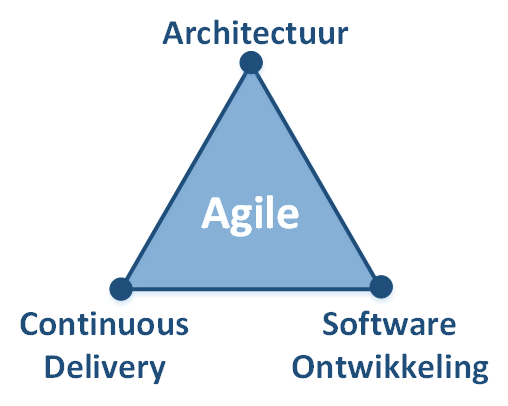

<article class="main-content">

    <div class="wrapper clearfix">

        <section class="page-content clearfix">

            <header class="section-header">
                <a href="https://nl.linkedin.com/in/pkalkman"></a> 
                <h3 class="section-title">Over mij</h3>
                <span class="section-subtitle">In 344 karakters</a></span>
            </header>

            <p>Mijn naam is <b>Patrick Kalkman</b>, mijn passie is software ontwikkeling. Ik help bedrijven met het verbeteren van het software ontwikkelings proces. Ik combineer hierbij mijn kennis en ervaring van <b>Agile Architectuur</b>, <b>Agile software ontwikkeling</b> en <b>Continuous Delivery</b>. Dit doe ik door samen te werken met en onderdeel te zijn van het ontwikkelteam.</p>

        </section>

        <section class="page-content clearfix" style="margin-top:15px;">

            <header class="section-header">
                <h3 class="section-title">Mijn expertise</h3>
                <span class="section-subtitle">Hoe kan ik helpen?</a></span>
            </header>

            <div class="one-half first">

                <h4>Agile Architectuur</h4>
                <p>Architectuur is het fundament van een IT oplossing. Ik ben er van overtuigd dat het creëeren van een architectuur het meest effectief is wanneer meerdere disciplines <b>samenwerken</b> bij de start en tijdens een project. Ik kan u helpen om deze sessies te faciliteren waarbij ontwikkelaars, testers en beheerders samen in interactieve sessies de ruwe schets van de oplossing samenstellen.</p>     

                <h4>Agile Software Ontwikkeling</h4>
                <p>Met meer dan 20 jaar ervaring in agile software ontwikkelingstrajecten ben ik in staat om samen met u de juiste oplossing te ontwikkelen. In de rol als agile ontwikkelaar, team leider of meewerkend voorman.</p>

            </div>

            <div class="one-half last">

                <h4>Continuous Delivery</h4>
                <p>Ik geloof dat moderne software ontwikkeling niet meer mogelijk is zonder Continuous Delivery. Het iteratief ontwikkelen en opleveren van software is essentieel om de wendbaarheid van organisaties te vergroten. Ik kan uw helpen om Continuous Delivery geleidelijk in te voeren om zo direct gebruikt te maken van de voordelen van automatisering van uw delivery proces.</p>

                <p></p>

            </div>


        </section>

        <section class="page-content clearfix">

            <header class="section-header">
                <h3 class="section-title">Mijn Werk</h3>
                <span class="section-subtitle">Resultaten waar ik trots op ben</a></span>
            </header>

            <ul class="projects-list clearfix">

                <li>
                    <a href="#">
                        
                        <div class="caption">
                            <div>
                                <h4>Video On Demand</h4>
                                <span>Moving a complete VOD solution to the Azure cloud</span>
                            </div>
                        </div>
                    </a>
                </li>

                <li>
                    <a href="#">
                        
                        <div class="caption">
                            <div>
                                <h4>Online Bank</h4>
                                <span>A new public website for a bank</span>
                            </div>
                        </div>
                    </a>
                </li>

                <li>
                    <a href="#">
                        
                        <div class="caption">
                            <div>
                                <h4>Telling Time</h4>
                                <span>Kinderen klok leren kijken</span>
                            </div>
                        </div>
                    </a>
                </li>

            </ul>

        </section>

    </div>

</article>